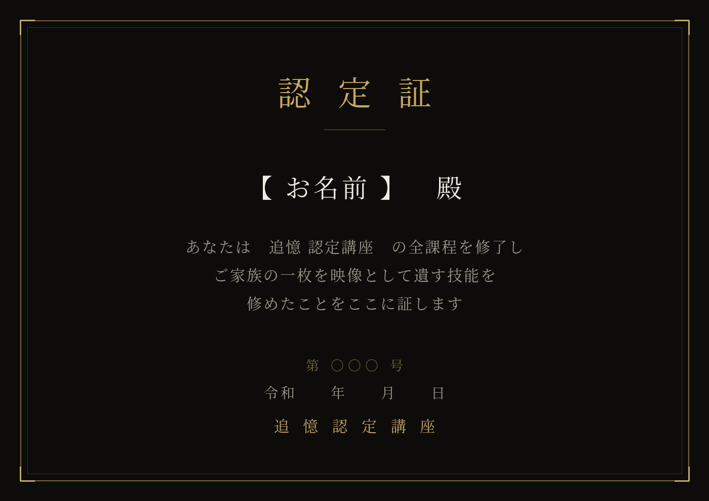

家系図をつくる。そして、ご先祖さまが動き出す。
は じ め に
仏壇の引き出しに、押し入れのアルバムに、たしかにある一枚。写っているのが誰なのか、知っていた人はもういない。記録はどこにも残っていない。——そうして、家の記憶は静かに終わっていきます。
残すべきものは、血のつながりの図だけではありません。その人がどんな顔で笑っていたか。どんな一日を過ごしたか。それを受けとれる形にするのが、このサービスです。
四 つ の 段 階
これは、家系図のアプリです。祖父母までの三世代、きょうだいと配偶者まで、お一人ずつ入れていきます。お名前だけでも構いません。断片で構いません。入れた分だけ、家の形が見えてきます。
お預かりした一枚の写真から、三十秒の映像をおつくりします。色は足しません。白黒のままです。足すのは、その日そこにあったはずの、ほんの少しの時間だけ。
映像をつくる仕組みそのものを、そのままお渡しします。ご自身の家の写真を、何枚でも、ご自身の手で動かせるようになります。
全課程を修了された方に、認定証を発行します。一通ずつ番号を付け、こちらで記録に残します。この認定証をもって、ご自身のお客さまから写真をお預かりし、映像をおつくりいただけます。

実 例
祖母と、孫。もとは一枚の白黒写真です。孫が見上げ、祖母が笑い、ふたりでカメラのほうを向いて——最後にはまた、はじめの写真と同じ姿に戻ります。
縦向きの映像も同時におつくりします。そのままSNSに載せられます。
会いたい人に、
もう一度。
お 問 い 合 わ せ
お手元の一枚を拝見してから、おつくりできるかどうかをお伝えします。まずはご相談ください。
相談する